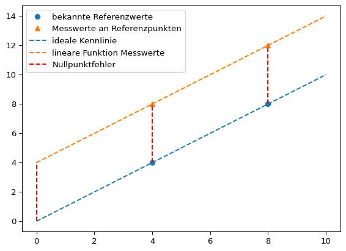
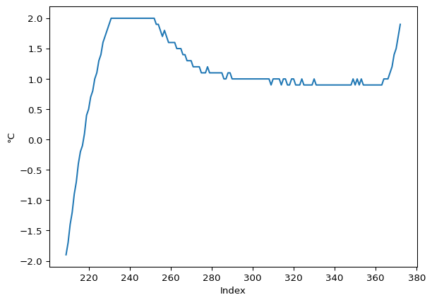
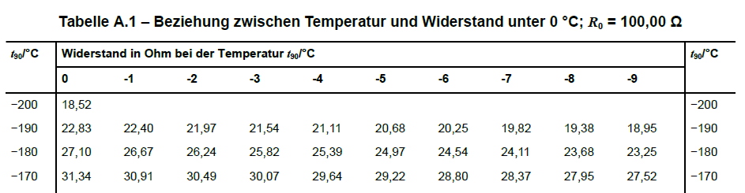

Die Genauigkeit von Messungen wird durch die Korrektion systemtischer Messabweichungen verbessert. In diesem Kapitel werden typische Fehlerarten bei Messungen behandelt:
additive Fehler,
multiplikative Fehler und
Nichtlinearität.
In diesem Abschnitt greifen wir die etablierten Begriffe auf, auch wenn die Fehler besser als systematische Messabweichungen bezeichnet werden sollten.
54.1 Kalibrieren und Justieren
Die Korrektion systemtischer Messabweichungen kann auf zwei Arten geschehen: durch Kalibrierung oder Justierung des Messgeräts.
Mit dem Begriff Kalibrierung wird im engeren Sinn die Ermittlung des Zusammenhangs zwischen Messwerten bzw. ihres arithmetischen Mittelwerts und dem vereinbarten richtigen Wert der Messgröße bezeichnet.
Important 54.1: Kalibrierung nach DIN 1319
“Ermitteln des Zusammenhangs zwischen Meßwert […] oder Erwartungswert […] der Ausgangsgröße […] und dem zugehörigen wahren […] oder richtigen Wert […] der als Eingangsgröße vorliegenden Meßgröße für eine betrachtete Meßeinrichtung […].” [@DIN1319-1, S. 22]
Im weiteren Sinn ist mit Kalibrierung auch “die Erstellung einer Korrektionstabelle […], die Ermittlung von Kalibrierfaktoren oder einer (empirischen) Kalibrierfunktion” [@DIN1319-1, S. 22] gemeint. Dabei handelt es sich um Methoden, um mit systematischen Messabweichungen behaftete Messwerte zu korrigieren, ohne das Messgerät zu verändern.
Im Unterschied dazu verändert die Justierung das Messgerät dauerhaft.
Important 54.2: Justierung nach DIN 1319
“Einstellen oder Abgleichen eines Meßgeräts […], um systematische Meßabweichungen […] soweit zu beseitigen, wie es für die vorgesehene Anwendung erforderlich ist.” [@DIN1319-1, S. 22]
54.2 Kalibriermethoden nach DIN 1319
In der DIN 1319 werden drei Kalibriermethoden genannt, die hier nur kurz behandelt werden:
Korrektionstabelle,
Ermittlung von Kalibrierfaktoren und
Ermittlung einer (empirischen) Kalibrierfunktion.
Welche Methode verwendet wird, hängt von dem Anwendungsbereich, der Datenverfügbarkeit sowie von der gewünschten Genauigkeit ab.
Methode
Anwendung bei …
Vorteile
Nachteile
Korrektionstabelle
nichtlinear, schwer modellierbar
einfach zu nutzen
viele Daten erforderlich, sonst Interpolation ungenau
Kalibrierfaktoren
lineare Abweichung
leicht umsetzbar
unzureichend bei Nichtlinearität
Kalibrierfunktion
nichtlinear, modellierbar
sehr genau
höherer Aufwand
54.2.1 Korrektionstabelle
Mit der Korrektionstabelle können beliebige Korrektionen dargestellt werden, sofern ausreichend Datenpunkte verfügbar sind. In sec-pt100 werden wir ein Beispiel für eine Korrektionstabelle kennenlernen.
54.2.2 Ermittlung von Kalibrierfaktoren
Ein Kalibrierfaktor kann angegeben werden, wenn eine konstante relative Abweichung vorliegt. Ein Beispiel aus der Praxis ist hier auf Seite 1 zu finden.
54.2.3 Ermittlung einer (empirischen) Kalibrierfunktion
Der Nullpunktfehler beschreibt die Abweichung der Messgröße von Null, wenn der gesuchte Wert tatsächlich Null ist. Der Nullpunktfehler wird auch als Nullabgleich, Nullpunktverschiebung oder Offset-Fehler bezeichnet. Der Nullpunktfehler ist konstant und wirkt additiv auf jeden Messwert. (ics Schneider Messtechnik)
Der Nullpunktfehler kann leicht bestimmt werden, wenn Messwerte für den Nullpunkt vorliegen und der wahre Wert bekannt ist. (Wenn außerdem bekannt ist, dass keine weiteren systematischen Messabweichungen vorliegen, kann der Nullpunktfehler über einen beliebigen wahren Referenzwert bestimmt werden.) Für die zur grafischen Darstellung angelegten Daten ist dies der Fall.
Wenn keine Daten für den Nullpunkt vorliegen, kann der Nullpunktfehler mit linearer Regression aus mindestens zwei bekannten Referenzpunkten geschätzt werden. Dazu wird wird eine lineare Regression mit den bekannten Referenzwerten als unabhängige Größe \(x\) und den Messwerten als abhängige Größe \(y\) durchgeführt. Der y-Achsenabschnitt der Regressionsgeraden ist der Nullpunktfehler.
Eine Schätzung der Regressionsgeraden aus 2 Punkten ist im Allgemeinen weniger zuverlässig als eine Schätzung aus mehreren Messpunkten. Die Beispieldaten sind perfekt linear.
Grafisch wird das Vorgehen deutlich.
# lineare Funktionen berechnenlm_kennlinie = poly.polyfit(x = [x1, x2], y = [y1, y2], deg =1)geschätzte_ideale_kennlinie = poly.polyval(x = np.arange(messwerte.size), c = lm_kennlinie)lm_messwerte = poly.polyfit(x = [x1, x2], y = [messwerte[x1], messwerte[x2]], deg =1)lineare_funktion_messwerte = poly.polyval(x = np.arange(messwerte.size), c = lm_messwerte)# plotten## Punkteplt.plot([x1, x2], [y1, y2], marker ='o', linestyle ='none', color ='C0', label ='bekannte Referenzwerte')plt.plot([x1, x2], [messwerte[x1], messwerte[x2]], marker ='^', linestyle ='none', color ='C1', label ='Messwerte an Referenzpunkten')## Linienplt.plot(np.arange(messwerte.size), geschätzte_ideale_kennlinie, marker ='none', linestyle ='dashed', color ='C0', label ='ideale Kennlinie')plt.plot(np.arange(messwerte.size), lineare_funktion_messwerte , marker ='none', linestyle ='dashed', color ='C1', label ='lineare Funktion Messwerte')plt.plot([0, 0], [messgröße[0], messwerte[0]], linestyle ='dashed', label ='Nullpunktfehler', color ='red')plt.plot([4, 4], [messgröße[4], messwerte[4]], linestyle ='dashed', color ='red')plt.plot([8, 8], [messgröße[8], messwerte[8]], linestyle ='dashed', color ='red')plt.legend()plt.show()

54.3.2 Nullpunktfehler korrigieren
Der Nullpunktfehler wird durch Subtraktion von den Messwerten korrigiert.
Die Quantifizierung des Nullpunktfehlers ist manchmal schwierig, beispielsweise weil der wahre Nullpunkt einer Größe nur schwer vermessen werden kann oder die Messdaten nicht durch eine einfache Funktion approximiert werden können. In diesem Fall muss eine möglichst gute Schätzung gefunden werden.
In einem Klimaschrank wurden 16 Thermoelemente Temperaturen von -10 °C bis 140 °C in Schritten von 10 °C ausgesetzt. Die Messgenauigkeit des verwendeten Datenloggers TCTempX16 liegt bei 0,01 °C, die Auflösung bei 0,1 °C. Für die Thermoelemente soll der Nullpunktfehler bestimmt werden.
Warning 54.2: Nullpunkt
0 ° C auf der Celsius-Skala ist kein sinnvoller Referenzpunkt zur Bestimmung des Nullpunktfehlers, weil die Abwesenheit von Wärme erst bei -273,15 °C gegeben ist. Da der Nullpunktfehler über alle Messwerte konstant ist, kann der Nullpunktfehler geschätzt werden, indem für jede Temperaturstufe der Nullpunktfehler separat geschätzt und die Ergebnisse anschließend gemittelt werden.
Die Messdaten liegen in der Datei ‘01-daten/kalibration_tc.xlsx’. Die Daten können mit dem folgenden Befehl eingelesen werden.
Betrachten wir den Verlauf der Daten für die ersten beiden Thermoelemente. (In der Darstellung mit pd.plot() ist die automatisch gewählte x-Achsenbeschriftung unansehnlich. Deshalb wird ein Datenobjekt für die Darstellung angelegt und die Spalte ‘Zeit’ auf die Uhrzeit reduziert.)
Es ist zu erkennen, dass der Klimaschrank beim Aufheizen auf die nächste Zieltemperatur zunächst zu stark aufheizt, bevor die eingestellte Temperatur für einige Zeit konstant gehalten wird. Die Temperatur von 140 °C wird nur kurz erreicht, es liegen aber kaum Messwerte vor.
Bestimmen Sie nun den Nullpunktfehler für alle Thermoelemente.
Wählen Sie für jedes Thermoelement die Bereiche der Datenreihe für die Temperaturstufen -10 bis 130 °C aus.
Bestimmen Sie für jede Temperaturstufe die gemessene Temperatur im Bereich der Datenreihe, in der die Referenztemperatur konstant gehalten wird.
Berechnen Sie den Nullpunktfehler für jeden Ausschnitt der Datenreihe und mitteln Sie die Ergebnisse für jedes Thermoelement.
Tip 54.1: Lösungshinweise
Tipp 1: Lagemaße wie der Median, Mittelwert oder der Modus können eine einfacher zu bestimmende Schätzgröße für den Nullpunktfehler sein.
Tipp 2: Gehen Sie schrittweise vor: Versuchen Sie zunächst, eine Temperaturstufe eines Thermoelements zu isolieren und die gemessene Temperatur im konstanten Bereich der Datenreihe zu bestimmen. Schreiben Sie anschließend eine Funktion, um den Programmcode für mehrere Thermoelemente und Temperaturstufen zu wiederholen.
Tipp 3: Eine gleichermaßen für 13 Temperaturstufen und 16 Thermoelemente geeignete Lösung dürfte kaum zu finden sein. Manchmal wird ein Wert gesucht, manchmal liegt der gesuchte Wert zwischen zwei Messwerten. Eine geringfügige Unsicherheit kann durch die Automatisierung in Kauf genommen werden.
Tip 54.2: Musterlösung Thermoelemente
Lösung für ein Thermoelement.
Bereich der Datenreihe für eine Temperatur auswählen, z. B. 0 °C. Dazu grenzen wir die Messwerte grob um den gesuchten Wert \(0 \pm 2 °C\) ein.
# Thermoelement 1## Messwerte grob um den gesuchten Wert 0 °C eingrenzengesuchter_wert =0maske1 = klimaschrank['Thermoelement 1 (°C)'].le(gesuchter_wert +2) # le = kleiner gleichmaske2 = klimaschrank['Thermoelement 1 (°C)'].ge(gesuchter_wert -2) # ge = größer gleichklimaschrank.loc[maske1 * maske2, 'Thermoelement 1 (°C)'].plot()plt.xlabel(xlabel ='Index')plt.ylabel(ylabel ='°C')plt.show()

In diesem Ausschnitt kann das Überschießen der Messwerte beobachtet werden, bevor sich die Messwerte etwa bei + 1 °C einpendeln. Auch ist der Anstieg zur folgenden Temperaturstufe zu erkennen.
Im zweiten Schritt sollen die Daten im konstanten Temperaturbereich ausgewählt werden. Dazu soll ein möglichst einfaches Kriterium verwendet werden: der häufigste im Ausschnitt vorkommende Wert, also der Modus. Dazu wird die Methode pd.value_counts() verwendet, die eine absteigend sortierte Series der Häufigkeiten zurückgibt, wobei im Index die Werte gespeichert sind (siehe Beispiel). Der im Index gespeicherte häufigste Wert wird mit der Methode pd.idxmax() ausgelesen.
# Thermoelement 1## Messwerte grob um den gesuchten Wert 0 °C eingrenzenmaske1 = klimaschrank['Thermoelement 1 (°C)'].le(gesuchter_wert +2) # le = kleiner gleichmaske2 = klimaschrank['Thermoelement 1 (°C)'].ge(gesuchter_wert -2) # ge = größer gleich## häufigster Wert im eingegrenzten Temperaturbereichmodus_bereich = klimaschrank.loc[maske1 * maske2, 'Thermoelement 1 (°C)'].value_counts().idxmax()## Nullpunktfehler bestimmennullpunktfehler = modus_bereich - gesuchter_wertprint(f"Nullpunktfehler: {nullpunktfehler}")## plottenklimaschrank.loc[maske1 * maske2, 'Thermoelement 1 (°C)'].plot()plt.axhline(y = modus_bereich, color ='r', linestyle ='--', label ='Modus')plt.xlabel(xlabel ='Index')plt.ylabel(ylabel ='°C')plt.legend()plt.show()
Nullpunktfehler: 0.9
Der Nullpunktfehler für Thermoelement 1 wird somit mit 0,9 °C bestimmt.
Um die Berechnung für die verschiedenen Temperaturstufen zu automatisieren, schreiben wir eine Funktion.
# Eingabe: data = pd.Series, gesuchter_wert = array like, schwellwert, puffer = Skalar# Verarbeitung: Elementweise werden die Werte in gesuchter_Wert ± puffer in data gesucht# Verarbeitung: Die Differenz aus dem Modus jedes Datenausschnitts und dem gesuchten Wert wird als Nullpunktfehler interpretiert # Ausgabe: Wenn output = True wird DataFrame der gesuchten Werte und Nullpunktfehler ausgegeben, wenn output = False wird der mittlere Nullpunktefehler ausgegebendef nullpunktfehler(data, gesuchte_werte, puffer =2, output =False):# Zielobjekt und Zähler anlegen ausgabe = pd.DataFrame({'Gesuchter Wert': pd.Series(), 'Nullpunktfehler': pd.Series()}) i =0for gesuchter_wert in gesuchte_werte:## Messwerte grob um den gesuchten Wert eingrenzen maske1 = data.le(gesuchter_wert + puffer) # le = kleiner gleich maske2 = data.ge(gesuchter_wert - puffer) # ge = größer gleich## Kriterium häufigster Wert im eingegrenzten Temperaturbereich modus_bereich = data.loc[maske1 * maske2].value_counts().idxmax()# Nullpunktfehler bestimmen nullpunktfehler = modus_bereich - gesuchter_wert# Werte eintragen ausgabe.loc[i] = pd.Series([gesuchter_wert, nullpunktfehler]).values# Zähler erhöhen i +=1# Optional Ausgabeif output: # output is Trueprint(ausgabe)# Rückgabe der gemittelten Nullpunktfehlerreturn ausgabe['Nullpunktfehler'].mean()
54.4 Multiplikative Fehler: Der Empfindlichkeitsfehler
Als Empfindlichkeits- oder Spannfehler wird ein über den Wertebereich (die Spanne) der gesuchten Größe zu- oder abnehmender Fehler bezeichnet. Die relative Messabweichung \(\delta\) ist dabei konstant, die absolute Messabweichung abhängig vom Messwert. (ics Schneider Messtechnik)
Der Empfindlichkeitsfehler kann geschätzt werden, wenn Referenzwerte bekannt sind. Dazu wird das Verhältnis der Größenänderung (des Anstiegs) der gemessenen und der wahren Werte gebildet.
Der Anstieg der Messwerte: 0.67
Der Anstieg der idealen Kennlinie: 1.0
Der Empfindlichkeitsfehler beträgt: -33.33 %
Der Empfindlichkeitsfehler kann auch durch eine lineare Regression mit den bekannten Referenzwerten als unabhängige Größe \(x\) und den Messwerten als abhängige Größe \(y\) bestimmt werden. Der Anstieg der Regressionsgeraden ist der Empfindlichkeitsfehler.
In einem Klimaschrank wurden 16 Thermoelemente einem Temperaturanstieg von -10 °C bis 140 °C ausgesetzt. Die Messgenauigkeit des verwendeten Datenloggers TCTempX16 liegt bei 0,01 °C, die Auflösung bei 0,1 °C. Für die Thermoelemente soll der Empfindlichkeitsfehler bestimmt werden.
Die Messdaten liegen in der Datei ‘01-daten/kalibration_tc_lineare_rampe.xlsx’. Die Daten können mit dem folgenden Befehl eingelesen werden.
Betrachten wir den Verlauf der Daten für die ersten beiden Thermoelemente. (In der Darstellung mit pd.plot() ist die automatisch gewählte x-Achsenbeschriftung unansehnlich. Deshalb wird ein Datenobjekt für die Darstellung angelegt und die Spalte ‘Zeit’ auf die Uhrzeit reduziert.)
Die Messung startet kurz vor der Aufheizphase. Etwa 16:40 Uhr wurde der Klimaschrank abgeschaltet. Die Messung lief danach noch einige Zeit weiter. Es müssen also der Start- und der Endpunkt der Aufheizphase bestimmt werden.
In diesem Beispiel soll angenommen werden, dass bei der Messung kein Nullpunktfehler vorliegt. Dazu suchen wir mit der Funktion aus Tip tip-te passende Messreihen. Aus dem anfänglich konstanten Bereich -10 °C wird der Nullpunktfehler bestimmt.
# Thermoelement 4gesuchter_wert =-10## Messwerte grob um den gesuchten Wert 0 °C eingrenzenmaske1 = klimaschrank['Thermoelement 4 (°C)'].le(gesuchter_wert +2) # le = kleiner gleichmaske2 = klimaschrank['Thermoelement 4 (°C)'].ge(gesuchter_wert -2) # ge = größer gleich## häufigster Wert im eingegrenzten Temperaturbereichmodus_bereich = klimaschrank.loc[maske1 * maske2, 'Thermoelement 4 (°C)'].value_counts().idxmax()## Nullpunktfehler bestimmennullpunktfehler = modus_bereich - gesuchter_wertprint(f"Nullpunktfehler: {nullpunktfehler}")## plottenklimaschrank.loc[maske1 * maske2, 'Thermoelement 4 (°C)'].plot()plt.axhline(y = modus_bereich, color ='r', linestyle ='--', label ='Modus')plt.xlabel(xlabel ='Index')plt.ylabel(ylabel ='°C')plt.legend()plt.show()
Nullpunktfehler: 0.0
# Thermoelement 15gesuchter_wert =-10## Messwerte grob um den gesuchten Wert 0 °C eingrenzenmaske1 = klimaschrank['Thermoelement 15 (°C)'].le(gesuchter_wert +2) # le = kleiner gleichmaske2 = klimaschrank['Thermoelement 15 (°C)'].ge(gesuchter_wert -2) # ge = größer gleich## häufigster Wert im eingegrenzten Temperaturbereichmodus_bereich = klimaschrank.loc[maske1 * maske2, 'Thermoelement 15 (°C)'].value_counts().idxmax()## Nullpunktfehler bestimmennullpunktfehler = modus_bereich - gesuchter_wertprint(f"Nullpunktfehler: {nullpunktfehler}")## plottenklimaschrank.loc[maske1 * maske2, 'Thermoelement 15 (°C)'].plot()plt.axhline(y = modus_bereich, color ='r', linestyle ='--', label ='Modus')plt.xlabel(xlabel ='Index')plt.ylabel(ylabel ='°C')plt.legend()plt.show()
Nullpunktfehler: 0.0
Bestimmen Sie den Empfindlichkeitsfehler für Thermoelement 4 und Thermoelement 15. Das wahre Minimum der Temperatur betrage -10 °C und das wahre Maximum betrage 140 °C.
Bestimmen Sie den Startpunkt der Aufheizphase.
Bestimmen Sie den Endpunkt der Aufheizphase.
Schätzen Sie eine ideale Kennlinie von -10 °C bis 140 °C für die Aufheizphase.
Ermitteln und korrigieren Sie den Empfindlichkeitsfehler in den Daten.
Tip 54.3: Musterlösung Empfindlichkeitsfehler
Startpunkt ermitteln, indem die Position des letzten Werts -10 °C bestimmt wird.
print(f"Messreihe Thermoelement 4 von Index {start4} bis Index {ende4}.",f"Messreihe Thermoelement 15 von Index {start15} bis Index {ende15}.", sep ='\n')
Messreihe Thermoelement 4 von Index 36 bis Index 2187.
Messreihe Thermoelement 15 von Index 36 bis Index 2188.
Ideale Kennlinie und lineare Funktion der Messwerte schätzen, Empfindlichkeitsfehler bestimmen.
In diesem Beispiel wird die absolute Messabweichung über den dargestellten Wertebereich kleiner, da der Nullpunktfehler mit positivem Vorzeichen und der Empfindlichkeitsfehler mit negativen Vorzeichen auftreten.
[24. 0.66666667]
Der Nullpunktfehler beträgt: 24.0
Der Empfindlichkeitsfehler beträgt: -33.33 %
Der Empfindlichkeitsfehler beträgt: -33.33 %
54.5.2 Nullpunkt- und Empfindlichkeitsfehler korrigieren
Bei der Korrektur von Nullpunkt- und Empfindlichkeitsfehler unterscheidet sich das Vorgehen abhängig von der Reihenfolge der vorgenommenen Korrekturen.
Zuerst wird der Nullpunktfehler korrigiert, danach der Empfindlichkeitsfehler.
Bei einer idealen Messung hängt der gesuchte Wert linear vom gemessenen Wert ab. Viele analoge Sensoren reagieren aufgrund von Materialeigenschaften oder abhängig von der Temperatur nicht linear auf die gemessene Größe. Das heißt, die Messwerte sind nicht direkt proportional zur Messgröße.
Dem kann zum einen durch die Anwendung von Kalibriermethoden wie der Korrektionstabelle oder von nicht linearen Verfahren zur Parameterschätzung, die im Methodenbaustein Datenfitting und Datenoptimierung behandelt werden, begegnet werden. Zum anderen können die Daten linear approximiert werden, um mit den leichter zu handhabenden linearen Verfahren der Parameterschätzung arbeiten zu können. Der dabei auftretende Linearitätsfehler muss quantifiziert werden. Dieses Vorgehen wird hier vorgestellt.
54.6.1 Beispiel Pt100
Das Pt100 ist ein Platin-Widerstandsthermometer (Pt = Platin) mit einem definierten Widerstandswert von \(100 \Omega\) bei einer Temperatur von 0°C (daher der Name Pt100). Der Widerstand eines Pt100 steigt mit der Temperatur. Bei 100 °C beträgt der Widerstand beispielsweise \(138,51 \Omega\). Der Zusammenhang zwischen der Eingangsgröße, dem elektrischen Widerstand, und der so gemessenen Temperatur ist jedoch nur näherungsweise linear.
Die Eigenschaften eines Pt100 Widerstandes sind in der Norm DIN EN IEC 60751 [@DIN60751] festgelegt. Dort wird der Zusammenhang durch zwei Polynome für den Temperaturbereich von -200 °C bis 0 °C und für den Temperaturbereich von 0 °C bis 850 °C beschrieben.
Für den Temperaturbereich –200 °C bis 0 °C: \[
R_T = R_0 \cdot \left(1 + A \cdot T + B \cdot T^2 + C \cdot (T - 100 ^\circ\text{C}) \cdot T^3\right)
\]
Für den Temperaturbereich von 0 °C bis +850 °C: \[
R_T = R_0 \cdot \left(1 + A \cdot T + B \cdot T^2\right)
\]
Dabei gilt:
\(R_T\) ist der Widerstand bei der Temperatur \(T\),
\(R_0\) ist der Widerstand bei \(0^\circ\text{C}\),
\(A\), \(B\) und \(C\) sind Konstanten, die den spezifischen Charakter des Sensors beschreiben. Dabei sind:
Im Anhang der Norm befinden sich Tabellen, die die Beziehung zwischen Temperatur und gemessenem Widerstand wiedergeben. Das Format der Tabellen erlaubt es, aus einem gemessenen Widerstandswert schnell die gemessene Temperatur zu ermitteln. Dazu sind in der ersten Spalte die Temperaturen in Zehnerschritten, in den folgenden zehn Spalten die Einerstelle eingetragen. Für Temperaturen unter Null ist die Einerstelle jeweils zu subtrahieren (erkennbar am Vorzeichen \(-\)), für Temperaturen über Null dagegen zu addieren (erkennbar am Vorzeichen \(+\)). Eine zusammengefasste Darstellung finden Sie zum Beispiel hier.

Figure 54.1: Ausschnitt der Tabelle A.1
[@DIN60751, S. 25]
Die Notation \(t_{90} / °C\) beruht auf der Internationalen Temperaturskala ITS-90 von 1990, die Temperaturen \(T_{90}\) in Kelvin und \(t_{90}\) in Grad Celsius definiert. Die Notation zeigt also an, dass in der Tabelle Angaben in Grad Celsius stehen. (@DIN60751, S. 10)
Note 54.2: Pt100-Tabelle einlesen
Für die Datenanalyse ist das tabellarische Format weniger geeignet. Die hier zusammengefasste Darstellung wurde in zwei CSV-Dateien kopiert.
Die Dateien soll so eingelesen werden, dass der elektrische Widerstand und die Temperatur jeweils eine aufsteigende Datenreihe bilden. Zunächst betrachten wir die Datei mit mit Temperaturen unter 0 Grad Celsius.
Es gibt 201 Werte (von -200 bis 0). Die Daten beginnen in der Zeile mit dem Index 1 (wenn die erste Zeile als header eingelesen wird). Diese enthält nur einen Eintrag in der Spalte ‘0’. Die folgenden Zeilen sind von rechts nach links einzulesen. Das Dezimaltrennzeichen ist das ,. Das Einlesen der Daten von rechts nach links kann auf viele Arten bewerkstelligt werden. Eine einzeilige Lösung beginnt damit, der Methode pd.iloc[::-1] eine negative Schrittweite zu übergeben.
Das führt dazu, dass die Zeilen des DataFrame in umgekehrter Reihenfolge ausgegeben werden. Um die Spalten in umgekehrter Reihenfolge auszugeben, wird der DataFrame mit der Methode pd.T zwei mal transponiert.
print(df.T.iloc[::-1].T)
2 1 0
0 1 2 3
1 4 5 6
Mit der NumPy-Methode np.flatten() kann ein Array in eine eindimensionale Struktur reduziert werden. Dafür wird mit der Methode pd.to_numpy() der DataFrame als NumPy-Array ausgegeben.
Für die Temperaturen oberhalb von 0 Grad kann das Vorgehen vereinfacht werden, da die Datei gleich aufgebaut ist und die Werte aufsteigend sortiert sind.
Es fällt auf, dass die Daten einen Fehlwert enthalten. Die Position des Fehlwerts wird mit zwei Pandas-Methoden bestimmt. pd.diff() gibt die Differenz jedes Werts zu seinem Vorgänger zurück. pd.idxmin() gibt den Zeilenindex (genauer das label) des kleinsten Werts zurück. (Läge der Fehlwert oberhalb der Linie, würde pd.idxmax() verwendet werden.)
# := ist der sog. Walross-Operatorprint(( position_fehlwert := pt100['Ohm'].diff().idxmin() ))print(pt100.iloc[list(range(position_fehlwert -2, position_fehlwert +3))])
Zwei Methoden zur Quantifizierung der Nichtliniearität sind die Festpunkt- und die Toleranzbandmethode.
54.6.3.1 Festpunktmethode
Important 54.3: Festpunktmethode
Die Endpunkte der realen Kennlinie werden durch eine Gerade verbunden. Der Linearitätsfehler ist das Maximum der Abweichung der Kennlinie zu dieser Geraden. [@Dubbel2011, S. W2-W3 (S. 1661-1662)]
Dazu bestimmen wir zunächst die Vorhersagewerte einer Geraden durch die Endpunkte.
lm = poly.polyfit( x = [pt100['Temperatur'].iloc[0], pt100['Temperatur'].iloc[-1]], y = [pt100['Ohm'].iloc[0], pt100['Ohm'].iloc[-1]], deg =1)print(lm.round(2)) # intercept + slopevorhersagewerte = poly.polyval(x = pt100['Temperatur'], c = lm)plt.plot(pt100['Temperatur'], pt100['Ohm'], marker ='o', linestyle ='', label ='elektrischer Widerstand', alpha =0.6)plt.plot(pt100['Temperatur'], vorhersagewerte, linewidth =2, label ='Vorhersagewerte endpunktverbindende Gerade')plt.yticks(pt100['Ohm'][::50]);plt.xlabel('Temperatur in °C')plt.ylabel('elektrischer Widerstand in Ohm')plt.grid()plt.legend()plt.show()
[89.37 0.35]
Aus der Differenz des gemessenen elektrischen Widerstands und der linearen Vorhersagewerte kann der maximale Linearitätsfehler bestimmt werden.
linearitätsfehler_festpunkt = (pt100['Ohm'] - vorhersagewerte).abs().max()print(f"Linearitätsfehler nach Festpunktmethode: {linearitätsfehler_festpunkt:.2f} Ohm.")
Linearitätsfehler nach Festpunktmethode: 16.43 Ohm.
54.6.3.2 Toleranzbandmethode
Important 54.4: Toleranzbandmethode
Bei der Toleranzbandmethode wird eine Gerade so durch die Messpunkte gelegt, dass die Summe der quadrierten Abweichungen der Messpunkte zu dieser Geraden (Methode der kleinsten Quadrate) oder die größte einzelne Abweichung (Tschebyscheff-Approximation) minimiert wird. Die Größe des Linearitätsfehlers ist die maximale senkrechte Entfernung der Kennlinie zu dieser Ausgleichsgeraden. [@Dubbel2011, S. W3 (S. 1662)]
Das Prinzip der Methode der kleinsten Quadrate haben wir bereits kennengelernt.
lm = poly.polyfit( x = pt100['Temperatur'], y = pt100['Ohm'], deg =1)print(lm.round(2)) # intercept + slopevorhersagewerte = poly.polyval(x = pt100['Temperatur'], c = lm)plt.plot(pt100['Temperatur'], pt100['Ohm'], marker ='o', linestyle ='', label ='elektrischer Widerstand', alpha =0.6)plt.plot(pt100['Temperatur'], vorhersagewerte, linewidth =2, label ='Regressionsgerade')plt.yticks(pt100['Ohm'][::50]);plt.xlabel('Temperatur in °C')plt.ylabel('elektrischer Widerstand in Ohm')plt.grid()plt.legend()plt.show()
[100.67 0.35]
Aus der Differenz des gemessenen elektrischen Widerstands und der linearen Vorhersagewerte kann der maximale Linearitätsfehler (= das größte Residuum) bestimmt werden.
linearitätsfehler_toleranzband = (pt100['Ohm'] - vorhersagewerte).abs().max()print(f"Linearitätsfehler nach Toleranzbandmethode: {linearitätsfehler_toleranzband:.2f} Ohm.")
Linearitätsfehler nach Toleranzbandmethode: 11.45 Ohm.
54.7 Die Zweipunktkalibrierung
Die Zweipunktkalibrierung ist ein praktisches Verfahren für die Kalibrierung von Messdaten. Die Zweipunktkalibrierung erfolgt über das bekannte wahre Minimum und das bekannte wahre Maximum einer Messreihe.
\[
b = \text{wahres Minimum} - a \cdot \text{Minimum Messwerte}
\]
\[
\text{kalibrierte Messwerte} = a \cdot \text{Messwerte} + b
\]
Die Variable \(a\) ist der Korrekturfaktor für den Empfindlichkeitsfehler. Die Variable \(b\) ist die Nullpunktkorrektur, nachdem der Empfindlichkeitsfehler korrigiert wurde.